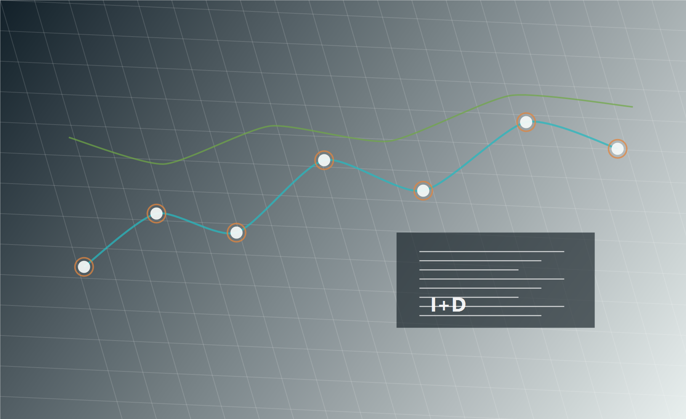

Segundo cerebro para investigacion
Proyecto Aureonix Omega
Plataforma web para almacenar, organizar, buscar, relacionar y expandir conocimiento cientifico con ayuda de inteligencia artificial, preparada para miles de documentos, proyectos y notas enlazadas.
Vision del sistema
Una plataforma modular para convertir informacion dispersa en conocimiento accionable.
Gestion del conocimiento
Centraliza libros, articulos, PDFs, notas, referencias y proyectos para que cada hallazgo pueda ser consultado, reutilizado y conectado con nuevas ideas.
Investigacion estructurada
Cada investigacion conserva titulo, resumen, hipotesis, objetivos, materiales, metodos, resultados, discusion, conclusiones, referencias y archivos asociados.
Desarrollo continuo
La plataforma se plantea como un producto vivo: modular, seguro, documentado y preparado para crecer sin perder orden tecnico.
Funcionalidades principales
Los modulos base de Aureonix Omega.
Panel principal
Resumen de proyectos, tareas, investigaciones recientes, actividad y documentos pendientes.
Investigaciones cientificas
Registro completo de hipotesis, metodos, resultados, comentarios, estados y archivos asociados.
Biblioteca documental
Gestion de libros, articulos, PDFs, etiquetas, referencias bibliograficas y metadatos.
Notas tipo wiki
Editor Markdown enriquecido, enlaces internos, historial de versiones y relacion entre ideas.
Chat con IA
Respuestas basadas en documentos almacenados, busqueda por contexto y apoyo para expandir conocimiento.
Administracion
Usuarios, permisos, OAuth, JWT, auditoria, configuracion del sistema y API documentada.
Arquitectura tecnica
Escalable, segura y lista para evolucionar.
Aureonix Omega se propone como una aplicacion web moderna separada por responsabilidades: interfaz, API, base de datos, busqueda semantica, cache, almacenamiento de archivos y servicios de inteligencia artificial.
React, Next.js, TypeScript y Tailwind CSS para una experiencia responsive y mantenible.
Python con FastAPI, API documentada, autenticacion OAuth + JWT y separacion modular por dominio.
PostgreSQL, pgvector para embeddings, Redis para cache y almacenamiento compatible con S3.
Docker, pruebas basicas por modulo, documentacion tecnica y crecimiento preparado para miles de archivos.
Modelo de investigacion
Estructura de datos cientifica.
Identidad
Titulo, resumen, estado del proyecto, comentarios y archivos asociados.
Marco cientifico
Hipotesis, objetivos, materiales, metodos y referencias bibliograficas.
Evidencia
Resultados, discusion, conclusiones, historial de versiones y trazabilidad.
Requisitos de calidad
Buenas practicas desde el primer prototipo.
Codigo modular
Separacion por dominios: usuarios, documentos, investigaciones, proyectos, busqueda, IA y administracion.
Pruebas basicas
Cada modulo debe incluir pruebas unitarias o de integracion para proteger el crecimiento del sistema.
Documentacion
API documentada, guias de instalacion, decisiones de arquitectura y manual de mantenimiento.
Seguridad
Control de acceso por roles, autenticacion robusta, validacion de datos y manejo seguro de archivos.
Carga y estructuracion
Sube archivos y conviertelos en una ficha metodologica.
Esta herramienta lee archivos de texto, Markdown, CSV o JSON desde tu navegador y genera una estructura inicial con la metodologia cientifica del proyecto. Los PDF y documentos complejos quedan registrados por ahora como archivos pendientes de extraccion avanzada.
Todavia no hay archivos estructurados. Sube un documento para generar la primera ficha metodologica.
Colaborador IA
Equipo IA multidisciplinario para investigacion avanzada.
Escribe una pregunta, una funcion que quieras mejorar o una busqueda de investigacion. El colaborador revisa avances y archivos guardados, razona como equipo academico y propone recomendaciones con nivel de maestria y doctorado.
El colaborador IA local esta listo. Guarda avances o estructura archivos para que sus recomendaciones tengan mas contexto.
Base de datos local
Registros almacenados en este navegador.
Los avances que envies desde el formulario se guardan localmente en tu equipo. Esta base sirve como prototipo inicial antes de migrar a PostgreSQL, FastAPI y autenticacion real.
Todavia no hay registros. Envia el formulario de la seccion siguiente para guardar el primer avance.
Siguiente etapa
Convierte Aureonix Omega en una aplicacion funcional.
Este sitio puede crecer hacia un prototipo real con dashboard, autenticacion, base de datos, API y modulos iniciales para investigaciones, documentos y notas.